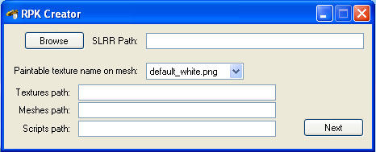
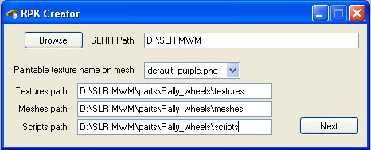
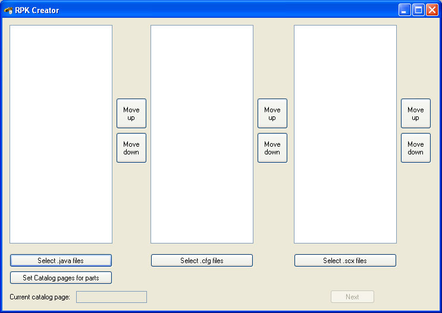
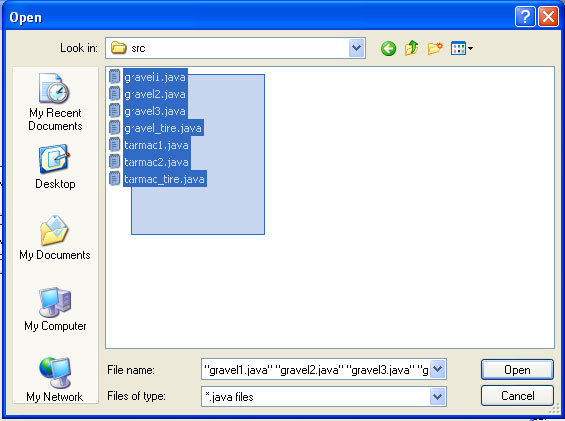
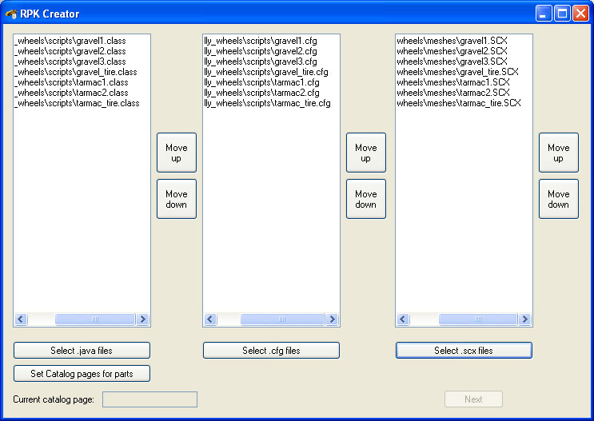
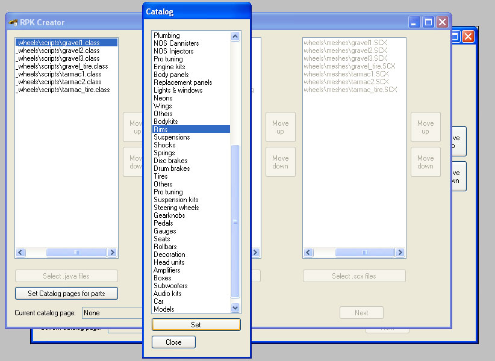
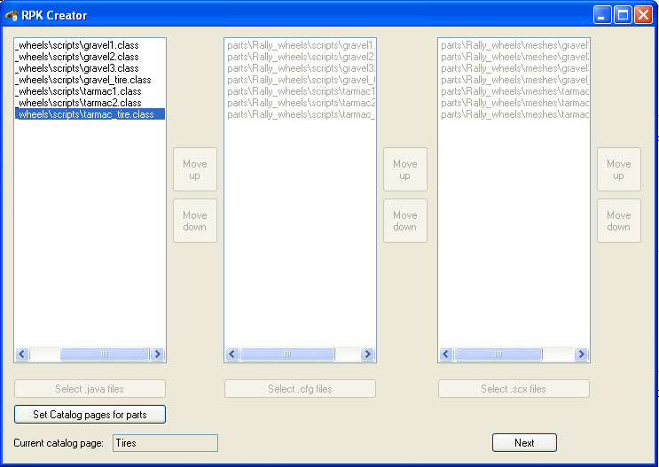
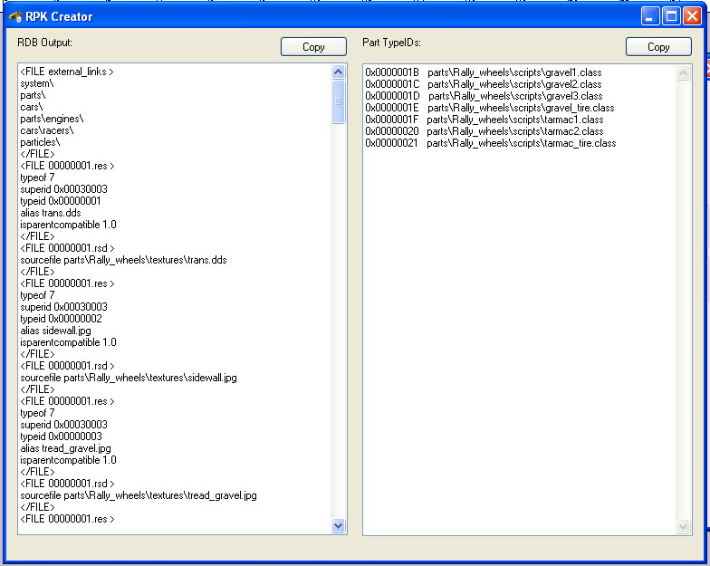
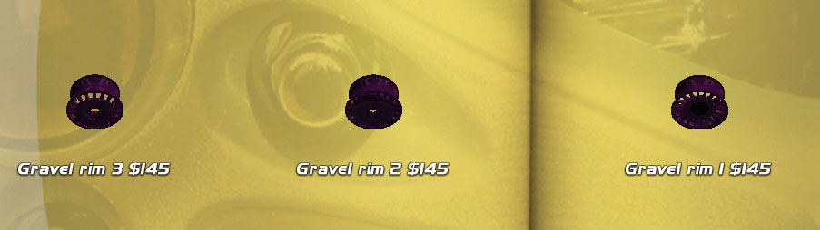

RPK Creator
by Rolts
With this little thing, you can make addon RPKs for SLRR easily. You just have to put in the files,
tell the catalog locations and it will do the RPK for you.
It will even edit the CFGs for you, automatically putting in the correct render, mesh, click and texture for each part.
For that reason, everything must be done, all meshes, cfgs and javas, before you use this.
The catalog page list is dynamic, and it's superids.ini. You can change that file, if you need other catalog pages. It defaults to 2.2.1 MWM, so if you fucked it up or something, just delete it and it will be remade the next time you open the Catalog window. If you need 2.3.0LE catalog pages, just change the the IDs yourself. You can add or remove lines from there and you can call them whatever you want. The names will only be used in the Catalog window of this program.
If you can't get it to work, check if you have .NET Framework 3.5, it needs it!
Get it here: http://www.microsoft.com/downloads/details.aspx?FamilyId=333325FD-AE52-4E35-B531-508D977D32A6&displaylang=en
Using it:

This is the first screen. Make sure you fill in everything and do it correctly. The paintable texture is the texture that you used in Max as the color of the part. If none of your parts are paintable, just leave it as it is.

Here, I've filled in everything correctly. Notice no ending slashes. DON'T PUT THEM!
Now when you're all done here, press Next.

This is the main screen. So get started, and select all your files you want included in the RPK. Press Select .java files.

And sellect all your javas.

Here I've filled everything in. Notice how all the stuff are in the same order. They have to be like that, otherwise you'll get a part with one thing's .class, some other thing's .cfg and a third thing's .scx mesh. So if after putting all your files in you see that they aren't all in the same order, use the up/down buttons on the sides to move things around. After you're done setting everything, you can go to set the catalog pages for the parts. WARNING: After pressing the catalog button you can no longer move things around or add anything, so only do it when you're sure everything is correct.

First click on the part in the main window, then on the catalog page you want and then press set. You HAVE to set a page for every part.

Now that everything's set, you can press next, to make your RDB source.

Copy the output to a new text file, save it as an RDB and resconvert it. The Part TypeIDs window is there, incase you have addon parts, that need
to be attached to each other, so you can easily change the CFGs using that.

So here they are. I only made the meshes, javas and copied cfgs of Invictus rims. I didn't change any cfgs by hand, the program put all the necessary TypeIDs in them.